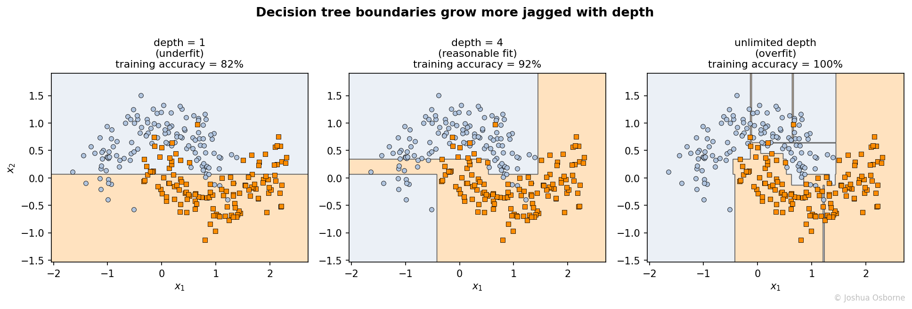

Statistics Notes
Recursive axis-aligned partitioning of feature space via greedy impurity minimisation, the interpretable foundation for all tree ensemble methods.
Contents
A decision tree predicts a target by asking a sequence of yes/no questions about the features, each question splits the data a little more than the last, until it finally reaches a leaf that holds a single prediction.
most models force a single global functional form onto the whole feature space: a line, a sigmoid, a fixed kernel. What the decision tree does instead is it recursively cuts the feature space into axis-aligned rectangles, fitting a simple constant prediction inside each one. This buys two things at once: the model is genuinely interpretable (the path from root to leaf is a list of “if feature \(j\) is above/below this value” rules a human can read), and it can capture interactions and non-linearities automatically, since the second split’s threshold is free to depend on which side of the first split a point fell on.
the price is that a single tree is a greedy, unstable model: it commits to one sequence of splits, that sequence can change a lot if the training data wiggles a little, and a deep enough tree happily memorizes noise. That instability is unattractive on its own, but it is also the entire reason Bagging, Random Forest, AdaBoost, and Gradient Boosting (GBM) exist: each is a different recipe for combining many trees so that the instability mostly cancels out and the interpretability gives way to accuracy.
a decision tree is a binary recursive partition of the feature space \(\mathbb{R}^p\). Starting from the full dataset at the root node, each internal node applies a single rule of the form \(x_j \le t\) (continuous feature) or \(x_j \in S\) (categorical feature) and routes each training point to the left or right child according to whether it satisfies the rule. This repeats until a stopping criterion is met, at which point a node becomes a leaf and is assigned a constant prediction:
classification: the majority class among the training points that landed in that leaf (or the full class-probability vector)
regression: the mean of the target values among the training points that landed in that leaf
a new point is predicted by walking the tree from the root, following the rule at each node, and reporting the prediction stored at the leaf it lands in. This algorithm, fitting splits greedily one at a time to locally maximize purity, is known as CART (Classification and Regression Trees).
| Symbol | Type | Meaning |
|---|---|---|
| \(D\) | set | the data sitting at a given node |
| \(N\) | integer | number of samples in \(D\) |
| \(K\) | integer | number of classes |
| \(p_k\) | scalar | proportion of class \(k\) in \(D\), in \([0,1]\) |
| \(\mathrm{Gini}(D)\) | scalar | Gini impurity of \(D\) |
| \(H(D)\) | scalar | entropy (in bits) of \(D\) |
| \(s = (j, t)\) | pair | a candidate split: feature \(j\), threshold \(t\) |
| \(D_L, D_R\) | sets | the left/right children of \(D\) after applying split \(s\) |
| \(N_L, N_R\) | integers | sizes of \(D_L, D_R\), with \(N_L + N_R = N\) |
| \(\mathrm{IG}(s)\) | scalar | information gain (impurity reduction) of split \(s\) |
| \(\bar{y}(D)\) | scalar | mean target value in \(D\) (regression) |
| \(\mathrm{RSS}(D)\) | scalar | residual sum of squares of \(D\) around its mean (regression) |
| \(T\) | tree | a fitted decision tree |
| \(\lvert T \rvert\) | integer | number of leaves in \(T\) |
| \(\alpha\) | scalar | cost-complexity pruning penalty per leaf |
a node is pure if every point in it belongs to the same class, and impure if classes are mixed. Two standard impurity scores are used:
\[\mathrm{Gini}(D) = \sum_{k=1}^{K} p_k (1 - p_k) = 1 - \sum_{k=1}^{K} p_k^2 \tag{1}\]
\[H(D) = -\sum_{k=1}^{K} p_k \log_2 p_k \tag{2}\]
both the Gini impurity and entropy are zero for a pure node and maximized when classes are balanced (\(p_k = 1/K\) for all \(k\)). The default tends to be the Gini impurity because the two methods tend to produce near identical results and avoid the log computation results in faster speeds.
for a candidate split ,\(s\), that sends \(D\) into \(D_L\) and \(D_R\), the impurity after the split is the size-weighted average of the children’s impurities (“Impurity” in the following equations represents either the Gini impurity or Entropy):
\[\mathrm{Impurity}(s) = \frac{N_L}{N}\,\mathrm{Impurity}(D_L) + \frac{N_R}{N}\,\mathrm{Impurity}(D_R) \tag{3}\]
the information gain of the split is how much impurity that split removes:
\[\mathrm{IG}(s) = \mathrm{Impurity}(D) - \mathrm{Impurity}(s) \tag{4}\]
Classification and Regression Trees’ (CART) fits a tree by repeated binary splitting. At each node, the algorithm searches for the single best way to divide the current data into two groups. It does this by trying every feature and every reasonable threshold value, computing the information gain (Eq. 4) for each candidate split, and keeping whichever split produces the largest gain.
For a continuous feature, the candidate thresholds are the midpoints between consecutive sorted values.
Once the best split is chosen, the data is divided into a left subset, \(D_L\), and a right subset, \(D_R\), and the same procedure runs independently on each. This recursion continues until a stopping rule fires:
At that point the node becomes a leaf and is assigned the majority class of the samples it contains.
The key idea is that CART is entirely greedy: it picks the locally best split at each step without reconsidering earlier decisions. This makes it fast, but it means that the tree is not guaranteed to be globally optimal.
regression trees use the same recursive-splitting skeleton but swap the impurity measure for within-node sum of squared error (MSE):
\[\mathrm{RSS}(D) = \sum_{i \in D} \big(y_i - \bar{y}(D)\big)^2 \tag{5}\]
a candidate split is scored exactly as in eq. (3)-(4), with \(\mathrm{RSS}\) standing in for \(\mathrm{Impurity}\). The best split is the one whose size-weighted child RSS is smallest; equivalently, the one that removes the most variance. Because \(\bar y(D)\) minimizes \(\sum_{i \in D}(y_i - c)^2\) over constants \(c\), this directly optimizes the only thing a constant-prediction leaf can offer.
a fully grown tree (split until every leaf is pure) almost always overfits: the leaves end up memorizing the training set. Rather than stopping early with a fixed depth, CART can grow a large tree and then prune it back by minimizing a penalized cost:
\[R_\alpha(T) = \sum_{\text{leaves } \ell \in T} \mathrm{RSS}(D_\ell) + \alpha \lvert T \rvert \tag{6}\]
(swap \(\mathrm{RSS}\) for misclassification count in classification). Increasing \(\alpha\) makes additional leaves more expensive, so larger \(\alpha\) prunes more aggressively; the value of \(\alpha\) itself is chosen by cross-validation. This is the single-tree analogue of the regularization term that reappears, in a more elaborate form, inside XGBoost’s objective.
8 emails, two binary features (“contains word A”, “contains word B”), labeled spam (1) or not (0):
| A | B | Spam | |
|---|---|---|---|
| 1 | 1 | 1 | 1 |
| 2 | 1 | 0 | 1 |
| 3 | 1 | 1 | 1 |
| 4 | 1 | 0 | 1 |
| 5 | 1 | 1 | 0 |
| 6 | 0 | 0 | 0 |
| 7 | 0 | 1 | 0 |
| 8 | 0 | 1 | 1 |
Root impurity. 5 spam, 3 not-spam out of 8: \(p_1 = 5/8,\ p_0 = 3/8\).
\[\mathrm{Gini}(D) = 1 - \left(\left(\tfrac{5}{8}\right)^2 + \left(\tfrac{3}{8}\right)^2\right) = 1 - \tfrac{34}{64} = 0.469\]
Split on A. \(A=1\): emails 1-5 (5 pts, 4 spam/1 not) \(\Rightarrow \mathrm{Gini} = 1-\left(\left(\tfrac45\right)^2+\left(\tfrac15\right)^2\right) = 0.320\). \(A=0\): emails 6-8 (3 pts, 1 spam/2 not) \(\Rightarrow \mathrm{Gini} = 1-\left(\left(\tfrac13\right)^2+\left(\tfrac23\right)^2\right) = 0.444\).
\[\mathrm{Impurity}(s_A) = \tfrac{5}{8}(0.320) + \tfrac{3}{8}(0.444) = 0.367 \quad\Rightarrow\quad \mathrm{IG}(s_A) = 0.469 - 0.367 = 0.102\]
Split on B. \(B=1\): emails 1,3,5,7,8 (5 pts, 3 spam/2 not) \(\Rightarrow \mathrm{Gini} = 1-\left(\left(\tfrac35\right)^2+\left(\tfrac25\right)^2\right) = 0.480\). \(B=0\): emails 2,4,6 (3 pts, 2 spam/1 not) \(\Rightarrow \mathrm{Gini} = 0.444\).
\[\mathrm{Impurity}(s_B) = \tfrac{5}{8}(0.480) + \tfrac{3}{8}(0.444) = 0.467 \quad\Rightarrow\quad \mathrm{IG}(s_B) = 0.469 - 0.467 = 0.002\]
Decision. \(\mathrm{IG}(s_A) = 0.102 \gg \mathrm{IG}(s_B) = 0.002\), so the root splits on feature A. Feature A nearly separates the classes by itself; feature B barely correlates with the label at all, and CART’s greedy search finds that automatically by trying every feature.
house size (sqft) vs. price ($1000s): \((500, 150),\ (700, 200),\ (1200, 300),\ (1500, 400)\).
Root RSS around the grand mean \(\bar y = 262.5\): \(\mathrm{RSS}(D) = 12656.25 + 3906.25 + 1406.25 + 18906.25 = 36875\).
Threshold \(t=600\). Left \(= \{500\}\), \(y=150\): single point, \(\mathrm{RSS}_L = 0\). Right \(= \{700, 1200, 1500\}\), \(y = 200, 300, 400\), mean \(300\): \(\mathrm{RSS}_R = 100^2 + 0^2 + 100^2 = 20000\). Total \(= 20000\).
Threshold \(t=1000\). Left \(=\{500,700\}\), mean \(175\): \(\mathrm{RSS}_L = 25^2+25^2=1250\). Right \(=\{1200,1500\}\), mean \(350\): \(\mathrm{RSS}_R = 50^2+50^2=5000\). Total \(= 6250\).
Decision. \(t=1000\) leaves total RSS \(6250 \ll 20000\) for \(t=600\), i.e. variance reduction of \(36875-6250=30625\) vs. only \(16875\). CART checks every midpoint between sorted values exactly like this and keeps the best.
a tree’s decision boundary is a union of axis-aligned rectangles, and adding depth adds rectangles, which is both the source of its flexibility and the source of overfitting. The figure shows the same two-moons dataset fit at three depths:

What to watch:
depth 1: a single split, just one straight cut, badly underfits the curved classes
depth 4: several rectangular cuts assembled together start tracing the moon shapes; this is roughly the sweet spot for this dataset
unlimited depth: the boundary fractures into tiny slivers chasing individual noisy points, training accuracy near 100% but with a visibly jagged, overfit boundary that would not generalize
“A single decision tree is a stable, reliable model.” It is the opposite: because each split is chosen greedily and every later split depends on every earlier one, changing a handful of training points can change the very first split, which results in a completely different tree. This high variance is the single biggest weakness of trees, and it is precisely what Bagging and Random Forest are built to address.
“Deeper trees just fit better, with no downside.” Depth without limit drives results in memorization of the training set. You will see this as validation error gets worse past some depth even though training error keeps improving. Depth is controlled with max-depth, minimum leaf size, or cost-complexity pruning (equation 6).
“Gini and entropy give meaningfully different trees.” In practice the two almost always rank candidate splits the same way. Pick Gini by default for its slightly cheaper computation (no logarithms).
“Regression trees can extrapolate.” A leaf’s prediction is the mean of the training targets that fell into it, a constant. For any input that lands in the same leaf as the training data with the largest target, the tree predicts that ceiling no matter what. If your training data has a maximum target value of 500, the tree can never predict above 500.
“Trees need scaled/normalized features.” Splits only ever compare a feature to a threshold (\(x_j \le t\)), so a monotonic transformation of a feature (scaling, log, rank) leaves every split decision unchanged. This differs from distance-based methods (e.g. K-Nearest Neighbors) or gradient-based linear models.
bias-variance tradeoff, Bagging, Random Forest, AdaBoost, Gradient Boosting (GBM), XGBoost